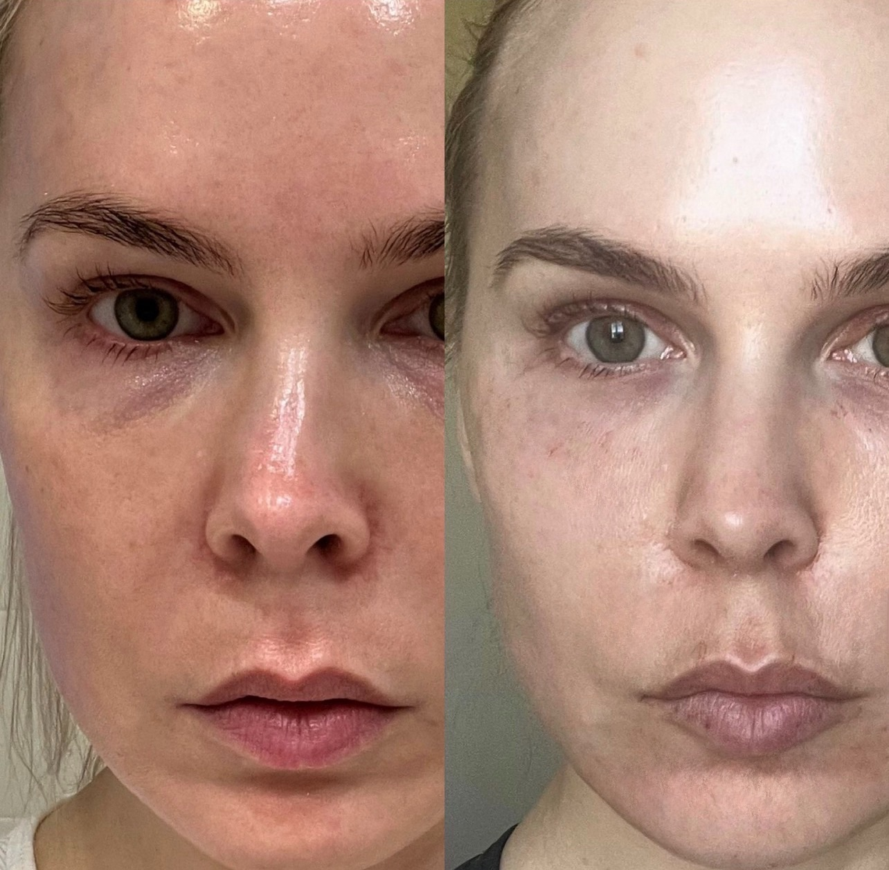
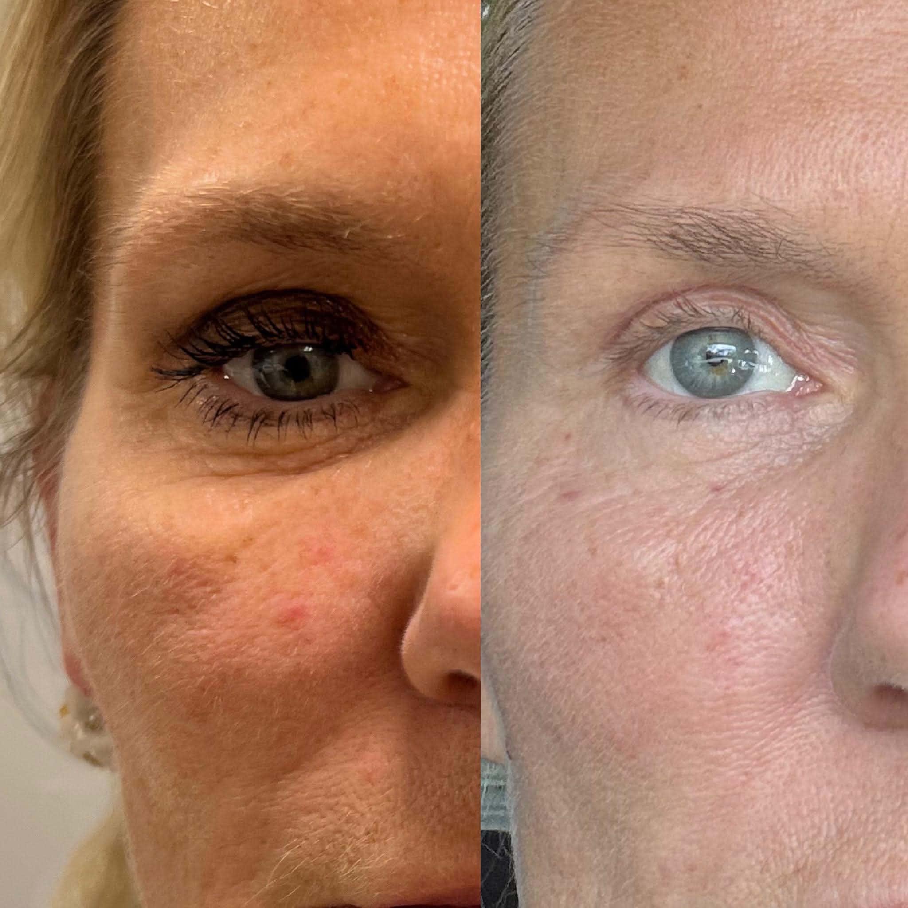
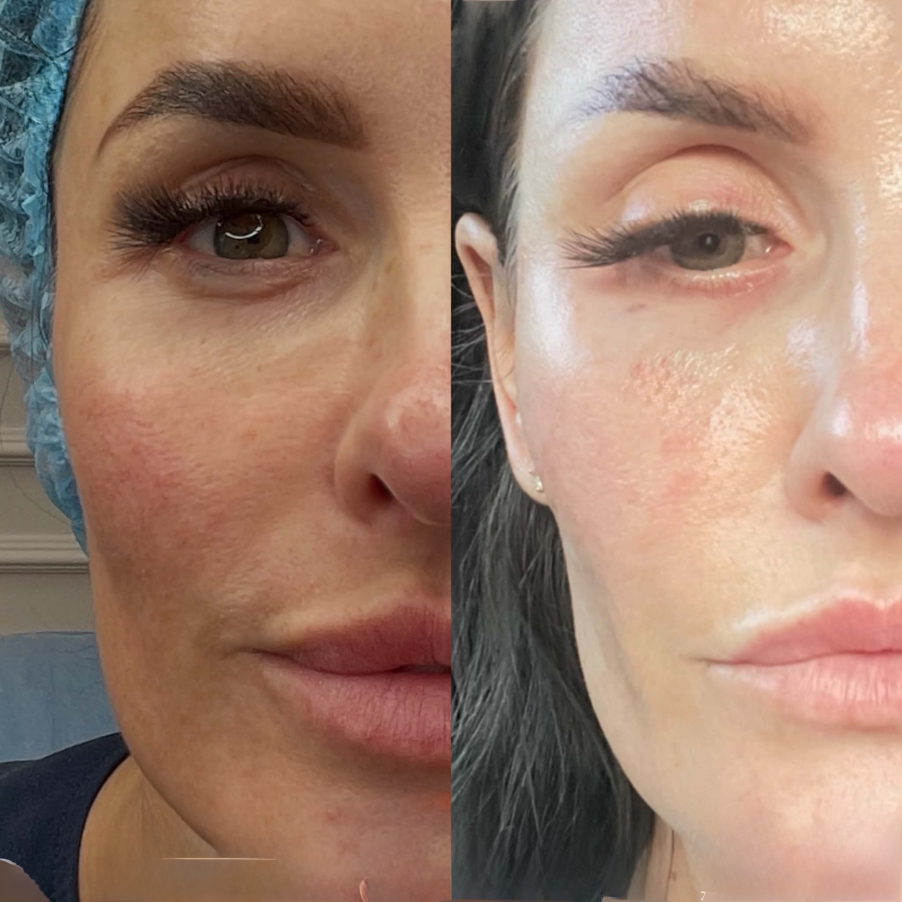
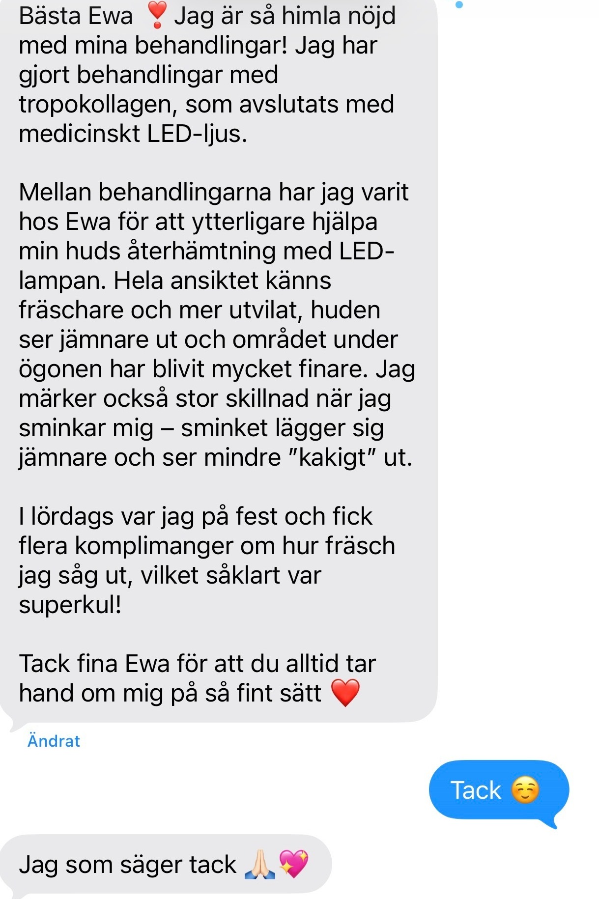
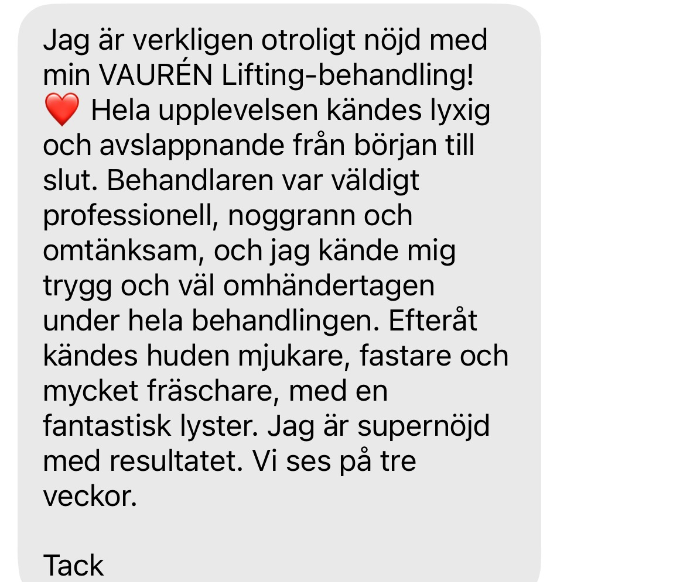
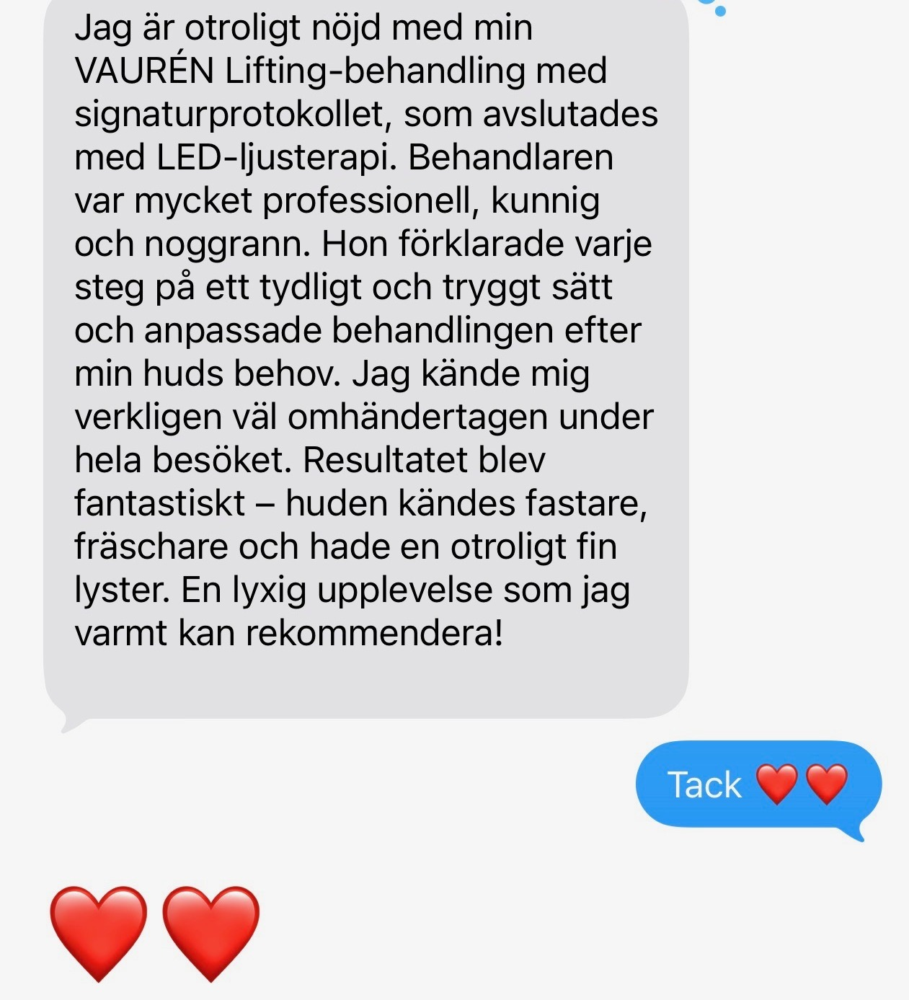

Tunn hud, fina linjer och förlorad spänst runt ögonen handlar inte alltid om volym.
Tropokollagen typ I används för att stödja hudens struktur och kvalitet i det känsliga ögonområdet.
Säkra din behandlingstid direkt. Efter bokningen kontaktar vi dig personligen för konsultation och individuell bedömning. Konsultationen kan genomföras online.
10 min Dermalux Tri-Wave MD direkt efter behandlingen ingår utan extra kostnad.
Huden känns tunnare och kärlen under kan ge en blåaktig ton.
Ytliga linjer och en hud som veckar sig lätt i det rörliga ögonområdet.
Huden återgår långsammare och konturen mot kindbenet blir otydligare.
Hudkvaliteten förändras snabbare än huden hinner anpassa sig.
Alla förändringar runt ögonen behöver inte mer volym. Ibland behöver huden istället stöd för sin struktur och kvalitet.
Tropokollagen är en grundläggande byggsten i kollagenets struktur. Behandlingen används för att stödja hudens kvalitet och struktur utan att skapa den volym som förknippas med fillers.
Fibroblasterna är de celler i huden som bygger och underhåller kollagen. Behandlingen syftar till att stödja hudens egen uppbyggnad över tid, snarare än att fylla ut ett område.
Hudförändring sker gradvis. Här kan du följa verkliga behandlingsförlopp från Vaurén INSTITUT.

Före Efter
Före Efter
Före EfterResultat är individuella och kan variera. Bilder publiceras med samtycke.
Ett kort ögonblick från behandlingen på Vaurén INSTITUT.
Säkra din behandlingstid.Introduktionspriset gäller de första 10 bokningarna.
Boka behandling — 1 995 krBoka den behandlingstid som passar dig direkt i BokaDirekt.
Efter bokningen kontaktar Vaurén INSTITUT dig personligen.
Vi går igenom behandlingen, din hälsa, dina förväntningar och gör en individuell bedömning. Konsultationen kan genomföras online.
Efter konsultationen gäller minst två dagars lagstadgad betänketid innan din första estetiska injektionsbehandling.
På din bokade behandlingsdag genomförs behandlingen om den individuella bedömningen visar att behandlingen är lämplig för dig.
Direkt efter behandlingen ingår 10 minuter Dermalux Tri-Wave MD som en del av introduktionserbjudandet.
Behandlingen kan göras som en enskild behandling eller som en del av en individuellt anpassad behandlingsserie. Om flera behandlingar rekommenderas planeras antal och intervall individuellt utifrån hudens utgångsläge och hur huden reagerar.
10 minuter Dermalux Tri-Wave MD med 633 och 830 nm ingår direkt efter behandlingen som en del av vårt efterbehandlingsprotokoll, utan extra kostnad.
Säkra din behandlingstid direkt. Vi kontaktar dig personligen efter bokningen.
Introduktionspriset 1 995 kr gäller de första 10 bokningarna.
Om behandlingen är lämplig för dig avgörs vid den individuella bedömningen före behandling.
Tidigare filler, PRF, skinboosters eller andra behandlingar i ögonområdet innebär inte automatiskt att du inte kan behandlas. Vi går igenom vad som tidigare har gjorts och bedömer därefter vad som är lämpligt för just dig.
De flesta beskriver behandlingen som korta stick vid injektionerna.
Efter behandlingen kan lätt rodnad, svullnad eller ömhet förekomma, men för de flesta är detta milt och övergående. Direkt efter behandlingen följer en session med Dermalux Tri-Wave MD som en del av vårt protokoll för att stödja hudens återhämtning och regenerativa processer. Vanligtvis kan du återgå till dina normala vardagsaktiviteter direkt eller samma dag.
Hudförändring sker gradvis över veckor och varierar mellan individer.
Det är individuellt. Behandlingen kan göras som en enskild behandling eller som en del av en behandlingsserie. Antal och intervall rekommenderas först efter individuell bedömning.
Nej. Behandlingen används för att stödja hudens struktur och kvalitet, inte för att tillföra volym eller förändra ansiktets form.
Det kan vara möjligt. Kombinationen bedöms individuellt vid konsultationen.
Ja, tidigare behandlingar innebär inte automatiskt att du inte kan behandlas. Vi går igenom vad som tidigare har gjorts och gör en individuell bedömning före behandling.
Nej. Konsultationen kan genomföras online före behandlingen.
Ja. Du kan boka din behandlingstid direkt i BokaDirekt. Efter bokningen kontaktar vi dig personligen för konsultation och individuell bedömning.
För estetiska injektionsbehandlingar gäller minst två dagars betänketid efter konsultationen innan den första behandlingen kan genomföras.
Redo att boka?Vi kontaktar dig personligen efter bokningen.
Boka behandling — 1 995 kr


På Vaurén INSTITUT arbetar vi med hudens kvalitet, struktur och din egen anatomi — inte med att skapa ett nytt ansikte.
10 min Dermalux Tri-Wave MD ingår.
Boka behandling — 1 995 krEfter bokningen kontaktar vi dig personligen för konsultation och individuell bedömning. Konsultationen kan genomföras online.